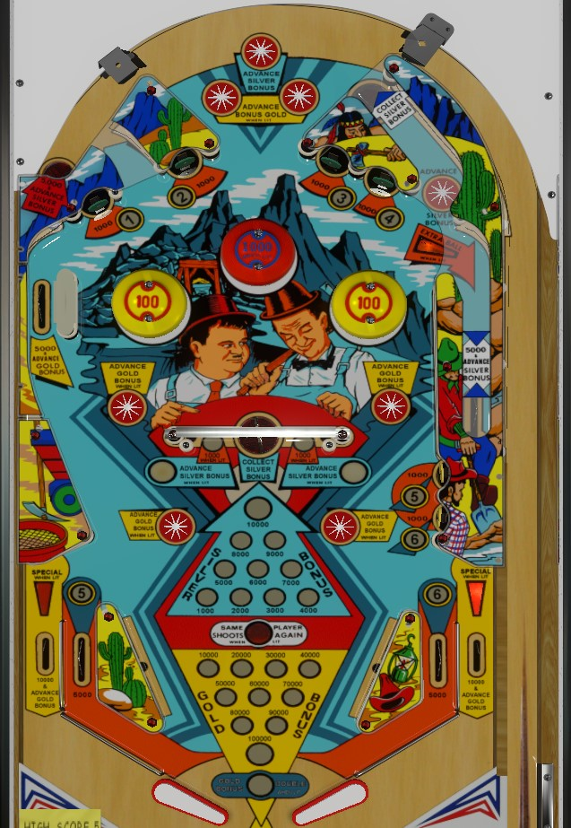

Only the Gold Bonus is awarded at the end of the ball. First, double the gold bonus by collecting the 5 and 6 from the in lanes or lower right standup targets. Second, build the gold bonus with lit star rollovers or the upper left side lane. Once gold bonus is doubled and maxed, shoot spinners all day. Spinners start worth 100 points, and the lit spinner advances silver bonus. The center saucer will always collect and reset the silver bonus, but this should be avoided, because lit spinners score 1,000 a spin if the silver bonus is maxed, which is more valuable long-term than a one-time 10,000 point collect.
Gold Bonus is the end of ball bonus, which starts at 10,000 points each ball and can be worth as much as 2x 100,000 = 200,000 points. There are three pairs of star rollovers labelled Advance Gold Bonus; one rollover in each pair will be lit at any time, alternating any time a 100 point switch other than a spinner is triggered. Gold Bonus can also be advanced from the upper left side lane. Each advance of the Gold Bonus is worth 10,000 points at the end of the ball rather than the conventional 1,000.
Collect the numbers 5 and 6 from the in lanes or the lower right standup targets to double the Gold Bonus for that ball. Both the standup targets and the in lanes score 1,000 points.
The Silver Bonus starts at 1,000 points, and can be increased by 1,000 at a time up to a max of 10,000. The Silver Bonus must be collected mid-ball or it is lost; it is not an end of ball bonus, and it is not affected by bonus multiplier. One of the two center spinners will be lit for a silver bonus advance per spin; these also alternate when most non-spinner 100 point switches are triggered. The upper right kicker lane and the upper left saucer score 5,000 points and a silver bonus advance. The center saucer and the upper right saucer, the latter of which is best accessed off a plunge or immediately after the upper left saucer is used, collect the silver bonus and reset its value to 1,000 points. The center saucer often kicks the ball up-left and into the top left saucer; the upper right saucer often kicks the ball off the right pop bumper and into the upper right kicker lane.
When the silver bonus is maxed out at 10,000 points, the lit center spinner will score 1,000 points per spin, instead of advancing the silver bonus. It is preferable to not collect the silver bonus, since the 1,000 point spinners are more valuable than collecting the silver bonus; this is because the silver bonus is not guaranteed points, and collecting the silver bonus resets its value to 1,000 points.
1-2-3-4 are standup targets near the top of the playfield and generally need to be collected via pop bumper luck. 5 and 6 can be collected at lower right standup targets or in lanes. Any numbered rollover or target gives 1,000 points.
Collecting 1-2-3-4 lights the upper right kicker lane for extra ball.
Collecting 5-6 lights double gold bonus at the end of the ball.
Collecting all of 1-2-3-4-5-6 lights the out lanes alternately for special.
Collected numbers in the 1 through 6 sequence are lost between balls.
Prospector has a conventional in/out lane setup. In lanes score the 5 and 6 in the 1-6 sequence, plus 1,000 points. Due to a sharp corner in the shape of the in lane, it is very difficult to shatz/alley pass to collect the 5 and 6. Out lanes score 10,000 points, advance the gold bonus, and can be lit alternately for a special if all of 1-6 have been collected. Slingshots score 100 points.
See Gold Bonus above.
I am not aware of any settings that allow extra ball or special to be worth points for competition/novelty play. Expect extra balls and specials to have no value in a tournament setting.
Unlike most games of the era and beyond, Prospector has two dummy score reels at the end of its scores. The smallest possible increment to scoring is 100 points, and the end of game match feature is based on the last 3 digits of players' scores rather than the last 2.